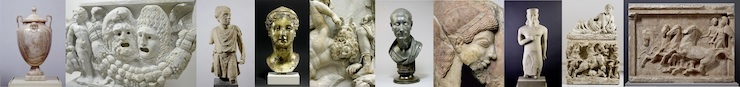
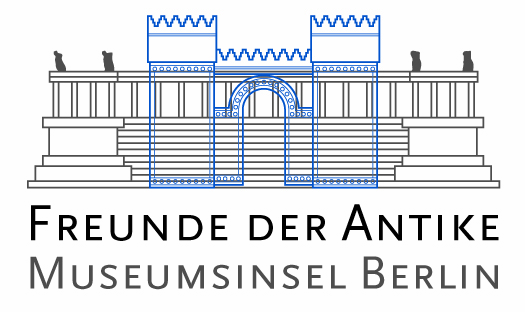

Der Gesamtkatalog der Skulpturen in der Antikensammlung der Staatlichen Museen zu Berlin enthält rund 2.600 griechische, zyprische, etruskische und römische Skulpturen in Stein sowie die wenigen Großbronzen (Bestände und Verluste). Der Katalog basiert auf einer vollständigen wissenschaftlichen Neubearbeitung der antiken Skulpturen, die im Rahmen des „Berliner Skulpturennetzwerks. Kontextualisierung und Übersetzung antiker Plastik“ durchgeführt wurde. Dieses Kooperationsprojekt zwischen der Antikensammlung der Staatlichen Museen zu Berlin und dem Institut für Klassische Archäologie der Freien Universität Berlin wurde in den Jahren 2009 bis 2012 vom Bundesministerium für Bildung und Forschung (BMBF) gefördert.
Die etwa 2.600 Skulpturen aus dem Bestand der Berliner Antikensammlung sind mit fotografischen Neuaufnahmen in mehreren Ansichten sowie partiell mit historischen Fotografien und Restaurierungskartierungen dokumentiert worden. Zahlreiche Bildwerke gerieten überhaupt zum ersten Mal vor die Linse einer Kamera. Über einhundert Wissenschaftlerinnen und Wissenschaftler haben die Skulpturen in ausführlichen Texten neu vorgelegt. Ein besonderes Augenmerk lag auf der Erforschung der Kontexte, die durch ein intensives Studium der Archivalien in vielen Fällen neu erschlossen werden konnten. Dabei erfuhren sowohl der ursprüngliche Aufstellungszusammenhang, als auch die nachantike Wirkungsgeschichte der Skulpturen eine eingehende Betrachtung. Insbesondere zu den Skulpturen aus Pergamon und Magnesia am Mäander wurde die Grabungsdokumentation systematisch überprüft.
Im Rahmen des „Berliner Skulpturennetzwerks“ wurden auch alle Gipsabgüsse nach griechisch-römischen Skulpturen in Berlin dokumentiert (http://arachne.uni-koeln.de/drupal/?q=de/node/255).
Bereits im Jahre 2011 sind die Bronzen der Antikensammlung (8.277 Einzelobjekte, inklusive der Kriegsverluste) in der Online-Datenbank „Antike Bronzen in Berlin“ zugänglich gemacht worden (www.smb.museum/antikebronzenberlin/).
Mitwirkende
Für die Antikensammlung der Staatlichen Museen zu Berlin: Andreas Scholl (Projektleitung); Martin Maischberger (Antragstellung); Johanna Auinger, Annika Backe-Dahmen, Astrid Fendt, Ralf Grüßinger, Mathias René Hofter, Sabine Neumann (Koordination, Redaktion, wissenschaftliche Bearbeitung); Johannes Laurentius (Fotografien); Wolfgang Maßmann, Sophie Haake-Harig, Pia Lehmann, Astrid Will (Restauratorische Betreuung); Jörg Kleemann, Oliver Vollert (Magazinverwaltung)
Für das Institut für Klassische Archäologie der Freien Universität Berlin: Johanna Fabricius (Projektleitung); Ulrike Papadopoulos (Wissenschaftliche Hilfskraft, Redaktion); Jana Beutler, Maria Goinis, Lukas Grzona, Margrith Kruip, Anja Küttner, Maria Lubitz, Annine Fuchs, Janina Rücker, Laila Sack (Studentische Hilfskräfte)
Für die Arbeitsstelle Digitale Archäologie am Archäologischen Institut der Universität zu Köln: Reinhard Förtsch (Teilprojektleitung); Karin Höhne, Michael Remmy (Wissenschaftliche Mitarbeiter); Gisela Geng, Philipp Groß (Fotografien), Geoffrey Carver, Johanna Fuchs, Patrick Gunia, Isabella Hodgson, Marcel Riedel, Louise Rokohl, Mahtab Salmannia, Marlene Scholz (Wissenschaftliche Hilfskräfte) Benjamin Gelhaar, Jacqueline Klitzsch, Alexander Recht, Eva Rucinski, Karen Schwane, Andreas Serifis (Studentische Hilfskräfte).
Ein besonderer Dank geht an die in den einzelnen Datensätzen namentlich angeführten Katalogautorinnen und -autoren, die – sofern es sich um externe Kolleginnen und Kollegen handelt – unentgeltlich an diesem ambitionierten Projekt mitgewirkt haben.
Für die Projektabwicklung des Verbundprojektes zeichnete Dr. Rolf Geserick (Projektträger im Deutschen Zentrum für Luft- und Raumfahrt in Bonn) verantwortlich. Unterstützt wurde das Projekt durch den Verein der Freunde der Antike auf der Museumsinsel e.V.
|  |